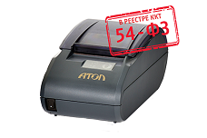
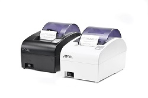
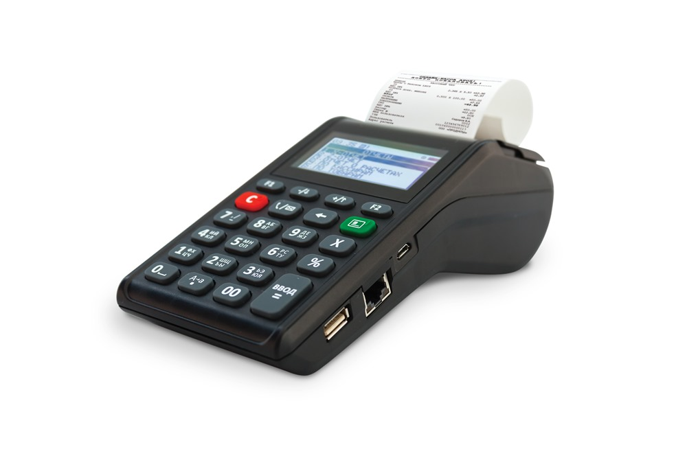
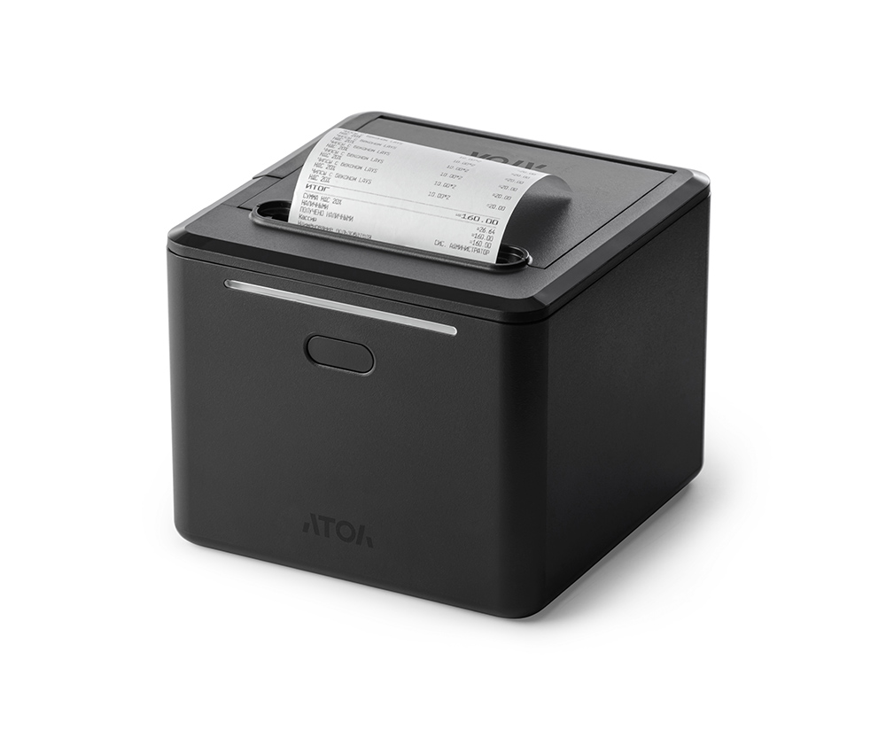
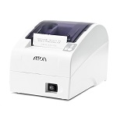
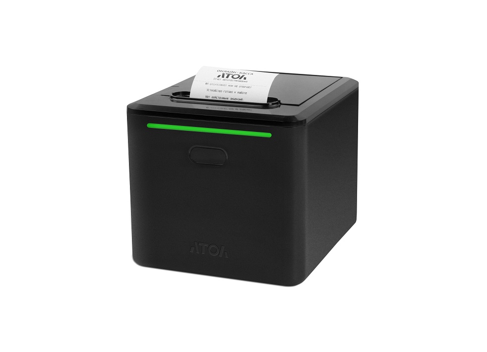

Для магазина
ККТ для розничной торговли, работы с товарами, маркировкой и кассовым рабочим местом.
Поможем подобрать кассу под формат торговли, используемую 1С, маркировку и задачи вашего бизнеса.
Авторизованный сервисный центр АТОЛ в Южно-Сахалинске
ККТ для розничной торговли, работы с товарами, маркировкой и кассовым рабочим местом.
Кассовое решение для расчётов с гостями и работы в заведении.
Компактная касса для приёма платежей и формирования чеков.
ККТ как часть полноценного рабочего места с 1С и периферией.
Не знаете, какой вариант подойдёт вашему бизнесу? Подобрать кассу →


Фискальный регистратор
Уточнить стоимость
Подобрать
Онлайн-касса
Уточнить стоимость
Подобрать
Фискальный регистратор
Уточнить стоимость
Подобрать
Фискальный регистратор
Уточнить стоимость
Подобрать
Фискальный регистратор
Уточнить стоимость
ПодобратьАктуальную стоимость и наличие уточняйте у специалиста ВИТ.
Магазин, общепит, услуги и другие форматы торговли.
Какая конфигурация 1С используется и как устроено рабочее место.
Нужно ли учитывать соответствующие товарные категории в вашем сценарии.
Количество продаж и формат кассового места.
Нужны ли сканер, весы, принтеры и другое оборудование рядом с кассой.
Специалист уточнит задачу, предложит подходящий тип ККТ и при необходимости подскажет, какие работы потребуются для запуска.
Формат торговли, используемая 1С, маркировка и требования к рабочему месту.
ККТ и необходимое оборудование под конкретный сценарий.
Если требуется регистрация, ОФД, подключение к 1С и настройка — это можно заказать отдельно.
Онлайн-касса или фискальный регистратор для формирования чеков и передачи фискальных данных.
Вы здесь
POS-компьютер, сканер, весы, принтеры и другая периферия для кассового места.
Оставьте заявку с описанием формата торговли и используемой 1С — специалист ВИТ уточнит задачу и предложит подходящий тип решения.
Да. При подборе учитываем конфигурацию 1С и то, как устроено рабочее место. Совместимость конкретной модели уточняется специалистом.
Да. Можно обсудить комплект рабочего места целиком — кассу и периферию под ваш сценарий.
Да. Регистрация, ОФД, подключение к 1С и технические работы выполняются в рамках услуги подключения и обслуживания ККТ.
Да. Оставьте заявку с моделью кассы и описанием задачи — специалист скажет, какие работы можно выполнить.
Актуальные модели, наличие и условия поставки уточните у специалиста ВИТ.
Расскажите, как устроена ваша работа — специалисты ВИТ помогут подобрать подходящее решение.